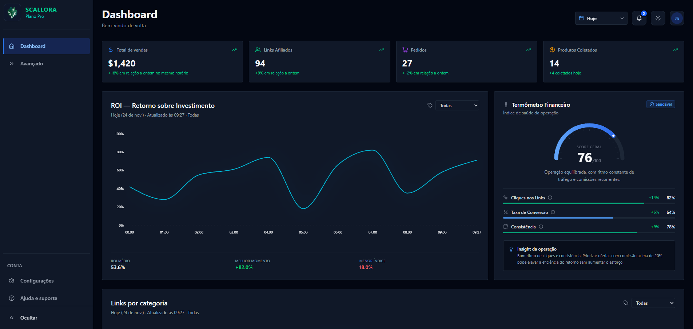
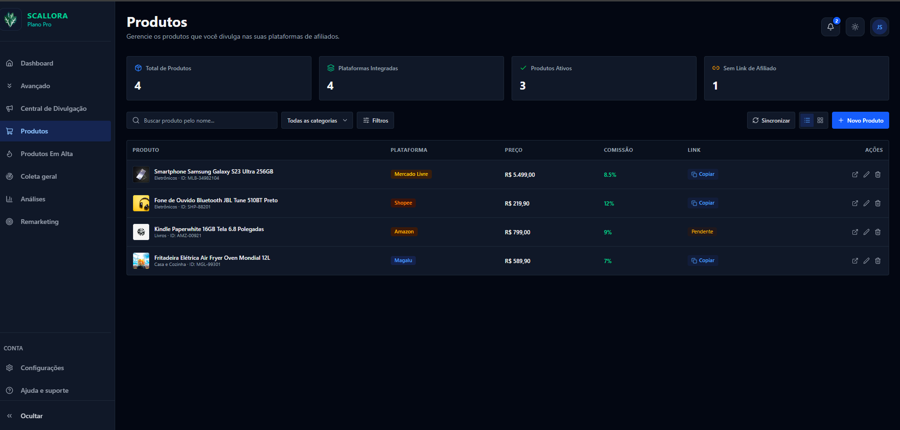
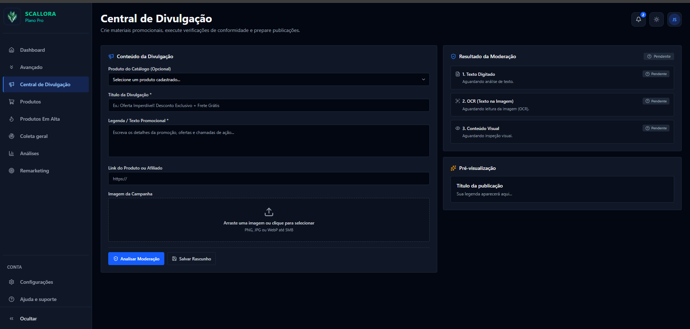

Etec Pref. Alberto Feres
Análise e Desenvolvimento de Sistemas (1º Ano)
Desenvolvimento de aplicações web, levantamento e documentação de requisitos, versionamento com Git/GitHub, prototipação no Figma e desenvolvimento Front-End do TCC Scallora.
Desenvolvedor Front-End em formação, construindo interfaces modernas e transformando mentorias práticas com empresas de tecnologia em código, requisitos e soluções reais.
Atualmente desenvolvendo o front-end do TCC Scallora e buscando minha primeira oportunidade de estágio em Desenvolvimento Front-End.
Sou João Pedro De Padua, estudante do curso integrado Etec Pref. Alberto Feres, atualmente no 1º ano de Análise e Desenvolvimento de Sistemas. Minha formação conecta os fundamentos da engenharia de software e programação (Python, React.js e Web) diretamente com a realidade do mercado por meio de mentorias técnicas com DevCoffee, Tebe, Fundação Iochpe e visita técnica à IBM.
Análise e Desenvolvimento de Sistemas (1º Ano)
Desenvolvimento de aplicações web, levantamento e documentação de requisitos, versionamento com Git/GitHub, prototipação no Figma e desenvolvimento Front-End do TCC Scallora.
4 Mentorias • GitHub, Sensores IoT & Entrega
Quatro encontros práticos com Marco (CEO), Matheus Nard e Marcos, desde a instalação de sensores preventivos até a entrega e avaliação técnica do projeto da equipe.
2 Mentorias • Resolução de Conflitos & Viagem Técnica
Encontros voltados ao desenvolvimento humano, comunicação empática, dinâmica de resolução de conflitos e doação que viabilizou a viagem técnica da turma à IBM.
10 Mentorias + Visão Institucional • Software House & Figma
Imersão completa no ciclo de uma software house fundada por Bruno Luis Ferreira e Murilo H. Torquato, da apresentação institucional e especificação de requisitos ao protótipo no Figma.
O Scallora é uma aplicação web desenvolvida como Trabalho de Conclusão de Curso (TCC) com o objetivo de centralizar, automatizar e escalar a operação de marketing de afiliados em múltiplos marketplaces (Amazon, Mercado Livre, Shopee, Magazine Luiza e TikTok Shop).



Afiliados que atuam em diversas plataformas enfrentam processos manuais repetitivos para encontrar ofertas, gerenciar links de divulgação, acompanhar métricas dispersas e recuperar vendas perdidas.
Uma plataforma unificada que integra coleta inteligente de produtos, central de divulgação, análise financeira e remarketing em uma interface moderna, responsiva e intuitiva.
Acompanhamento em tempo real de vendas, cliques em links, pedidos, ROI diário por categoria e um Termômetro Financeiro da operação.
Automação de busca de produtos por marketplace e palavras-chave personalizadas, com suporte a coleta contínua (modo loop).
Gestão completa de produtos com visualização em lista e grade, filtros avançados, sincronização externa e otimização automática de imagens.
Organização de campanhas com análise de moderação e OCR, recuperação de cliques não convertidos e acompanhamento de taxa de conversão.
Cisco Networking Academy & Python Institute
30h Certificadas • Venturus / Softex
Desenvolvimento Front-End
Prototipação UI/UX
Versionamento & Repositórios
Banco de Dados & Documentação
Foto oficial desta mentoria pendente de atualização.